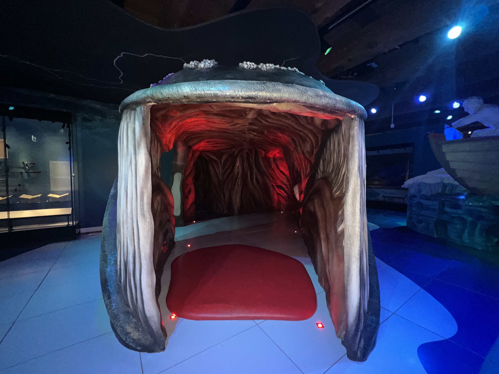
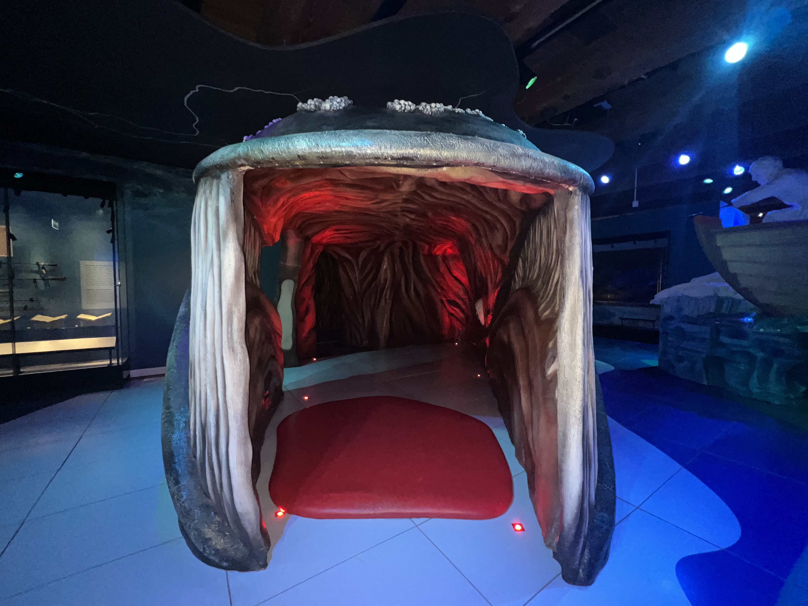

Tickets
Tickets
Tickets
Tickets

 


Het Scheepvaartmuseum is gevestigd in 's Lands Zeemagazijn. Dit monumentale gebouw uit 1656 werd ontworpen door Daniel Stalpaert als pakhuis van de Admiraliteit van Amsterdam. Het Zeemagazijn werd gebouwd toen Amsterdam de grootste haven ter wereld was. Nu, ruim 350 jaar later, is het Zeemagazijn nog altijd een indrukwekkend gebouw met veel karakter. De perfecte locatie voor Het Scheepvaartmuseum, dat hier sinds 1973 is gevestigd.

Willem van de Velde de Oude en zijn zoon Willem van de Velde de Jonge waren toonaangevend in de zeventiende-eeuwse zeeschilderkunst en inspireerden vele generaties schilders na hen. Nu zijn zij weinig bekend bij het grote publiek. Dit jaar komt daar verandering in: de Van de Veldes worden voor eens en voor altijd op de kaart gezet.

De tentoonstelling Republiek aan Zee laat zien hoe Nederland als maritieme natie is gevormd. Aan de hand van ruim 50 topstukken vertelt de tentoonstelling het verhaal van de Republiek in de 17e en 18e eeuw. De Hoofdgalerij is het startpunt van een museumbezoek.

Aan de steiger van Het Scheepvaartmuseum ligt het stoomschip Christiaan Brunings, een ijsbreker uit 1900. Het schip was afgeschreven voor de sloop, maar Rijkswaterstaat nam het initiatief in 1968 het schip hiervoor te behoeden en het een nieuw leven in te blazen.
Leuk museum! Eerst het VOC schip bekeken, erg fijn dat kinderen een beetje kunnen klimmen en klauteren! VR experience ook heel leuk. Wel vrij veel apparaten stuk en beeld ook niet heel scherp. Verder nog de vleugel bezocht met oa de walvis. Hier ook veel te doen voor kinderen. Spel op de bovenste verdieping ook enthousiast gedaan. Voor ons een hele leuke middag.
Een erg leuk museum met een mooie en interessante collectie. Het geeft een goed beeld van de historie van de scheepvaart in Nederland. Vooral de schepen buiten zijn ook erg leuk om te bezoeken.
Alleen de locatie en het gebouw alleen al zijn de moeite waard om dit museum te bezoeken. Maar ook de tentoonstellingen zijn interessant en mooi. Prachtige scheepsmodellen en verder veel aandacht voor onze vaderlandse maritieme historie. De tentoonstelling over de geschiedenis van de cartografie was goed opgezet met prachtige historische platen. De expositie over de gevolgen van de stijging van de zeespiegel overal ter wereld was boeiend en door middel van filmpjes mooi in beeld gebracht. Ook de foto's waren schitterend.